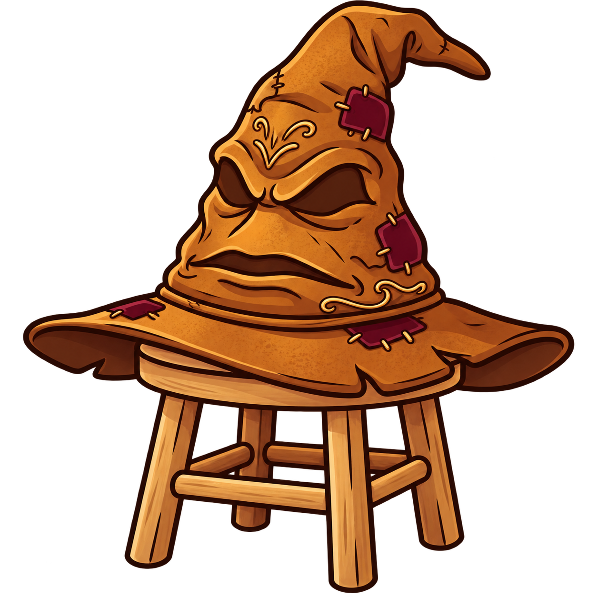
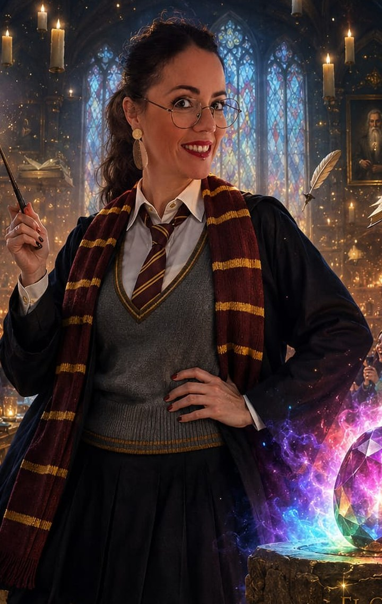

Ministerio de Magia · Sección de Matrimonios
Primero, el Sombrero dirá a qué casa perteneces.
Después: cuatro etapas y cuatro pruebas.
Ninguna bruja llega al altar sin superarlas.

Vaya, vaya… otra que se casa.
Siéntate, Jenny. Antes de empezar esta travesía tengo que decidir a qué casa perteneces: Gryffindor, Slytherin, Ravenclaw o Hufflepuff. Cuatro preguntas y lo sabré.
Y no mientas, que llevo mil años en esto.
Mmm… interesante. Muy interesante.
El sombrero ha decidido
¡GRYFFINDOR!

Valor, descaro y una capacidad preocupante para arrastrar a otras a los líos. No había duda.
Torre de Gryffindor
Las brujas que hacen esta travesía posible.
La travesía